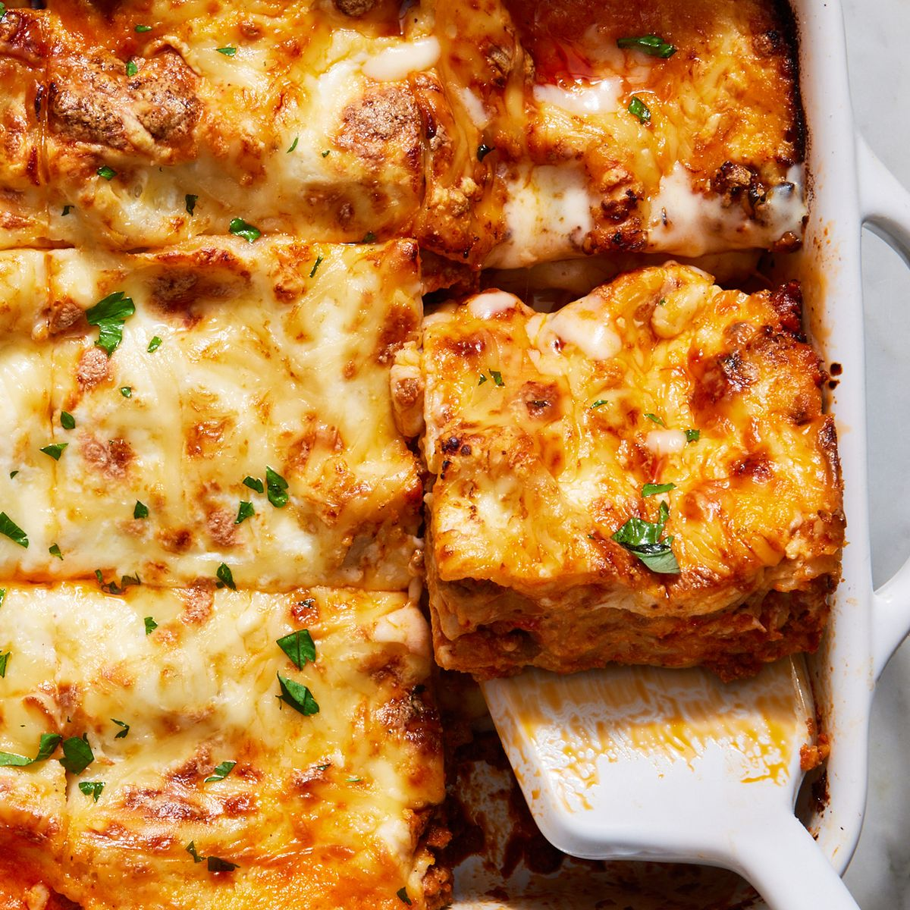

Simple Lasagna Recipe

Ingredients:
For Lasagna:
- 12 lasagna noodles
- 1 pound lean ground beef
- 2 cloves garlic, crushed
- 1 can crushed tomatoes (28 ounces)
- 2 cans tomato paste (6 ounces each)
For Cheese Mixture:
- 1/2 cup grated Parmesan cheese
- 2 tablespoons chopped fresh basil
- 2 tablespoons chopped fresh oregano
- 2 eggs
- 3 cups ricotta cheese
- 2 cups shredded mozzarella cheese
Instructions:
- Preheat oven to 375 degrees F (190 degrees C).
- In a large pot of boiling salted water, cook lasagna noodles until al dente. Rinse with cold water, and drain.
- In a large skillet or saucepan, cook ground beef with garlic over medium heat until beef is browned. Stir in crushed tomatoes and tomato paste, then simmer for 15 minutes.
- In a mixing bowl, combine grated Parmesan, basil, oregano, beaten eggs, ricotta, and mozzarella. Mix well.
- In a 9x13 inch baking dish, spread 1 cup of meat sauce on the bottom of dish. Place 6 lasagna noodles on top of sauce. Spread one half of cheese mixture over noodles. Repeat layers, ending with meat sauce, and sprinkle extra parmesan on top.
- Bake in preheated oven for 45 minutes, or until cheese is bubbly and brown. Let stand 10 minutes before serving.